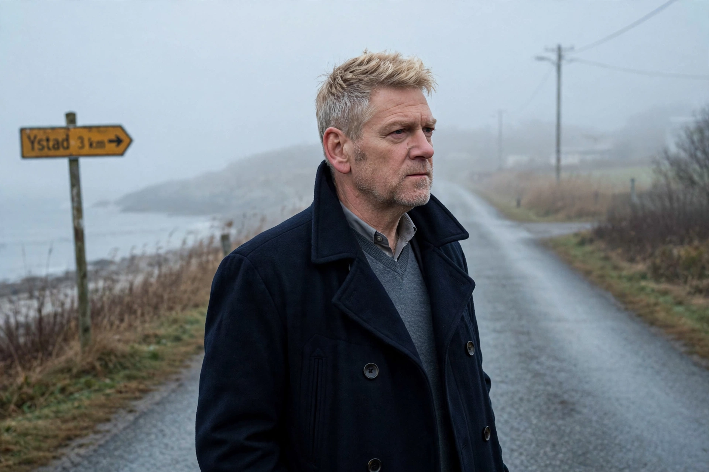

Kurt Wallander is a fictional Swedish police inspector created by author Henning Mankell, protagonist of a series of crime novels set in and around Ystad in Skåne, southern Sweden.
Wallander is divorced, melancholic, fond of opera, often ill-tempered with colleagues, and troubled by his health, his drinking, and his difficult relationships with his father and his daughter Linda. His investigations confront Sweden's social anxieties: immigration, racism, and the erosion of the welfare state.
The series includes Faceless Killers (1991), The Dogs of Riga, The White Lioness, Sidetracked, The Fifth Woman, One Step Behind, Firewall, and The Troubled Man (2009), in which Wallander faces Alzheimer's disease.
The books were adapted into Swedish films with Rolf Lassgård and Krister Henriksson, and into the BBC series Wallander starring Kenneth Branagh, as well as Netflix's Young Wallander. See Henning Mankell.